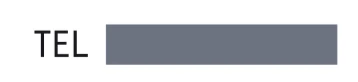
カクス 使い方ガイド
見せたくない数字を、
見せたくない数字を、
なぞるだけで隠す。
電話番号・金額・口座番号…。PDFの隠したい部分をクリックやドラッグで隠して、元の文字ごと消したPDFとして書き出せます。このページだけで使い方がひととおりわかります。
PDFは端末の外に送信されません
▶ クリックで再生
3ステップで完了
覚えることはこれだけです。各ステップを押すと詳しい説明に移動します。
その場で試してみよう
下の書類はお試し用です（架空のデータ）。アプリと同じ操作で隠せます。右のミッションを順にクリアすると、基本操作はマスターです。
この数字をクリック
原本を表示中
数字をクリック、または範囲をドラッグ隠した数 0
ヒント：書類をクリックしたあとは、キーボードの 123（隠し方）、[]（程度）、S（吸着）、Delete（削除）、P 長押し（原本）も使えます。
画面の見かた
番号にマウスを乗せる（タップする）と、その場所が光って説明が出ます。
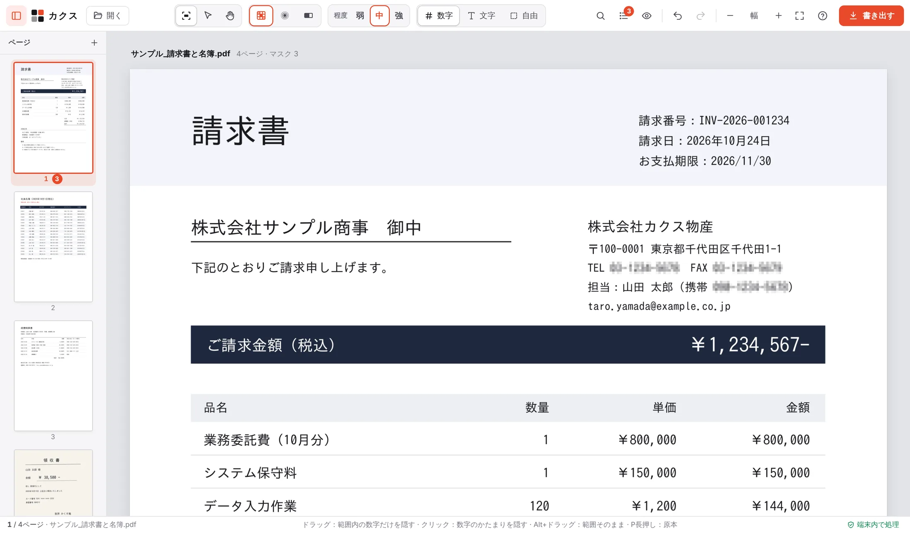
PDFを開く
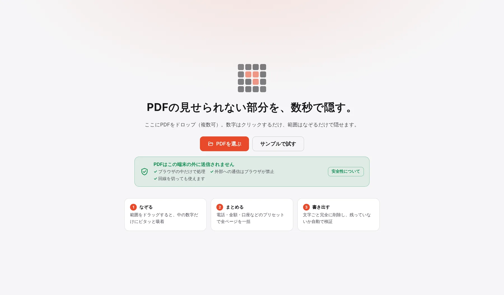
- PDFを画面にドロップします。複数のファイルをまとめてドロップできます。
- または 「PDFを選ぶ」（Ctrl+O）からファイルを選びます。
- まず触ってみたいときは 「サンプルで試す」。架空の請求書で練習できます。
🔑パスワード付きPDFも開けます。開くときにパスワードを聞かれます。
💾作業は自動で保存されます。同じPDFを開き直すと「前回の作業が残っています → 復元する」が出ます（保存するのはマスクの位置だけ。PDF本体や隠した文字は保存しません）。
🛡️PDFは端末の外に送信されません。処理はすべてブラウザの中で行い、外部への通信はブラウザ側で禁止しています。ネットを切った状態でも使えます。
なぞって隠す
基本は「クリック」と「ドラッグ」の2つだけ。表をざっくりなぞっても、数字だけにピッタリ合わせて隠します。
クリック
数字のかたまりを1つ隠します。03-1234-5678 のような区切り付きの番号もひとかたまり。
ドラッグ
なぞった範囲の中の数字だけに、行ごとに吸着して隠します。¥記号や表の罫線は残ります。
Alt＋ドラッグ
吸着せずに、なぞった範囲そのままを隠します。印影や写真、スキャンしたページにも。
動画で見る
- 電話番号のあたりをざっくりドラッグ → 数字だけが隠れる
- 金額をクリック → そのかたまりだけが隠れる
- 作った直後のマスクは選択中。Esc で選択を外して次へ
▶ クリックで再生
吸着モード：何に合わせて隠すか
上のバーの「数字・文字・自由」、または S キーで切り替えます。同じ範囲をなぞったときの違い：
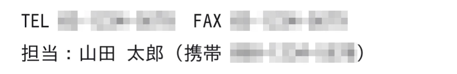
数字（いつもの設定）：数字だけを隠し、「TEL」「担当」などの文字は残します。
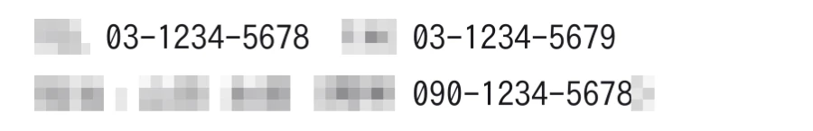
文字：名前などの数字以外の文字だけを隠し、数字は残します。
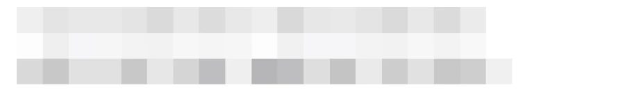
自由：なぞった四角の範囲をそのまま隠します（Alt＋ドラッグと同じ）。
📄スキャンしたPDF（紙を読み込んだ、文字情報のない画像のページ）は、開くと自動で文字認識（OCR）して、ふつうのPDFと同じように数字に吸着できるようにします。表示中のページから順に、1ページ数秒で終わります（終わるまでは範囲をそのまま隠せます）。認識は端末の中で行い、外には送りません。読み取りは完全ではないので、書き出したPDFは目で確認してください。
隠し方を選ぶ
隠し方は3種類。キー 1 モザイク、2 ぼかし、3 塗りつぶし。マスクを選んでから押すと、そのマスクも変わります。
モザイク・ぼかしの程度（弱・中・強）
上のバーの「程度」、または [ ] キーで切り替えます。どの程度でも、書き出したPDFは画面のとおりの見た目になります。
弱多少は推測できる
中うっすら判別できる
強ほとんど読めない
モザイク
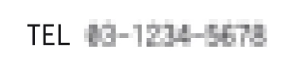
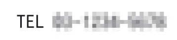
ぼかし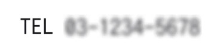
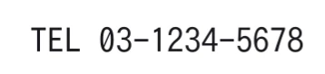
← 隠す前⚠️「弱」はあえて多少読めるくらいの軽い隠し方です。絶対に読まれたくない情報には「強」か「塗りつぶし」を使ってください。もっと細かく調整したいときは、マスクを選んだときのバーにある スライダー を使います。
塗りつぶし：色と透明度
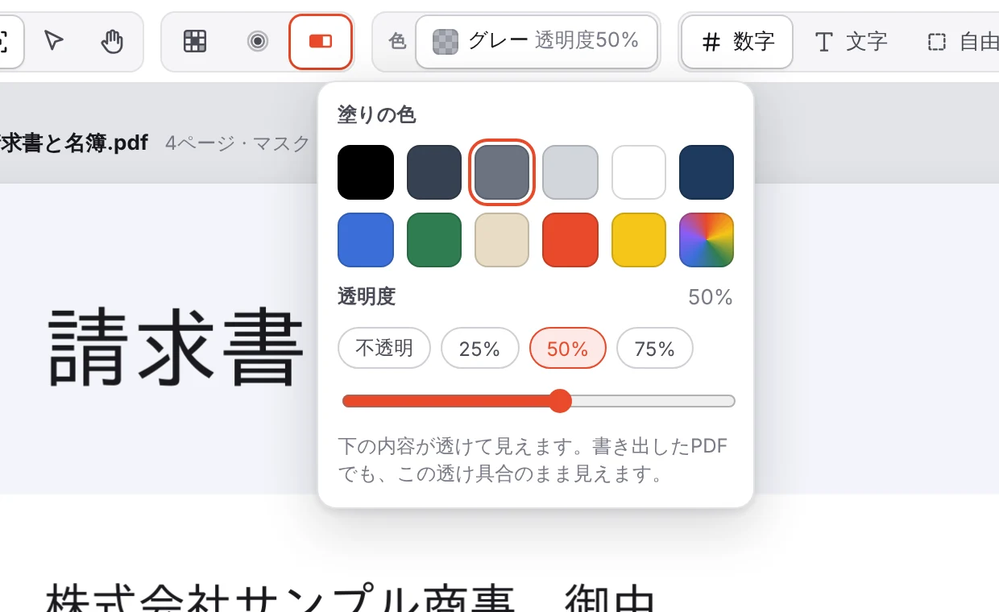
- 3 か「塗りつぶし」を選ぶと、上のバーに 「色」 ボタンが出ます。
- 色見本から選びます。黒・グレー・ネイビー・ベージュなど11色と、虹色のボタンで好きな色も。
- 透明度を上げると、下の文字があえて透けて見えます。強調したい・和らげたい場所に。
💡マスクを選んだときに出るバーの 色見本ボタン からも、そのマスクだけ色を変えられます。
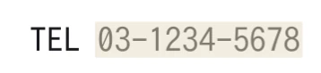
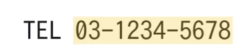
動画で見る：あとから変える
- マスクをクリックして選ぶと、上に操作バーが出ます
- バーで弱・中・強を切り替え、2 でぼかし、3 で塗りつぶし
- 色見本ボタンから色と透明度を選ぶ
▶ クリックで再生
まとめて隠す
同じ番号が何ページにも出てくる、全ページの口座番号を消したい…そんなときは1つずつ隠す必要はありません。
▶ クリックで再生
同じ値をすべて隠す
- 番号を1つ隠すと、ほかのページにも同じ値があれば 「同じ値がほかに◯か所あります」 と出ます。
- Enter（または「すべて隠す」）で、全部まとめて隠れます。
検索して一括で隠す
- Ctrl+F（虫めがねのボタン）で検索パネルを開きます。
- プリセットを押すか、文字を入力します。全角・半角は区別しません。
- 一覧で確認して、残したいものはチェックを外します。
- Ctrl+Enter で、全ページの該当箇所をまとめて隠します。
電話番号金額日付カード番号口座番号マイナンバー郵便番号メールすべての数字
▶ クリックで再生
確認・修正する
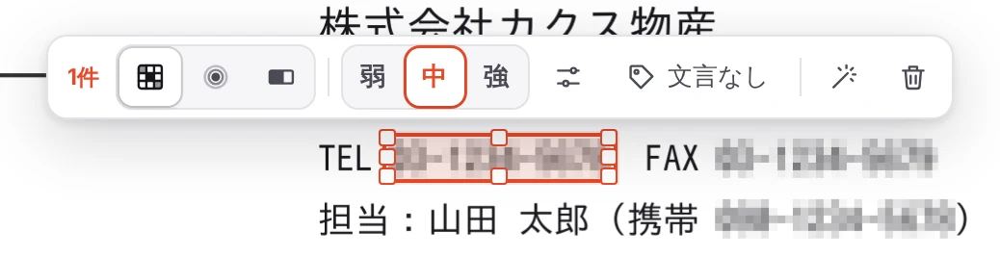
マスクをクリックすると出る操作バー：件数 ／ 隠し方 ／ 程度（塗りつぶしなら色） ／ 細かい調整 ／ 文言 ／ 同じ値を探す ／ 削除
動かす・大きさを変える
マスクをドラッグで移動、四隅と辺のつまみで大きさを変更。矢印キーで1pt（Shiftで10pt）ずつ動かせます。
原本を確認
P を押している間だけ、隠す前の原本を表示。目のアイコンで切り替えもできます。
元に戻す
Ctrl+Z で元に戻す、Ctrl+Shift+Z でやり直し。削除も Delete ですぐ戻せます。
文言を重ねる
「非開示」「個人情報」などの文言を、マスクの上に重ねられます。自由入力も可能です。
マスク一覧
L で隠した箇所の一覧。クリックでその場所へ移動、まとめて選択・削除もできます。
まとめて選ぶ
Shift+クリックで追加選択、Shift+ドラッグで範囲内を選択、Ctrl+A でページ内すべて。
ページを整える
- 左のページ一覧でページをクリックすると、そのページへ移動します。
- サムネイルにマウスを乗せると、回転・削除のボタンが出ます。
- サムネイルをドラッグすると並べ替えられます。
- 一覧の上の ＋ でPDFを追加。複数のファイルは書き出すときに1つに結合もできます。
⌨️表示中のページは Ctrl+L 左回転、Ctrl+R 右回転、Ctrl+D 削除。
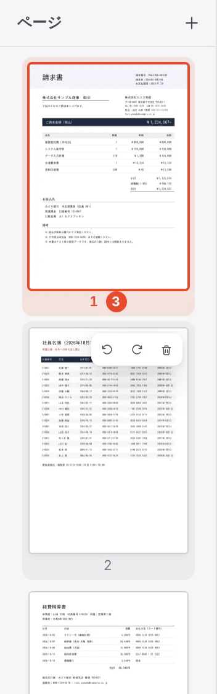
書き出す
右上の「書き出す」（Ctrl+S）を押して、仕上がりを選びます。元のファイルは変更されず、新しいPDFが保存されます。
仕上がりの選び方
どれを選んでも見た目は画面で加工したとおりです。違いは「隠した部分の下にある元の文字データ」の扱い。押して比べてみてください。
▶ クリックで再生
書き出したら、自動で確認
- 隠した部分に残っている文字：0文字
書き出したPDFを開き直して、マスクの中に文字が残っていないか確かめます。 - 隠した部分以外の見た目の変化
マスクの外が元と変わっていないか、画素を比べます。 - 文書情報
作成者・タイトルなどの情報が消えているかを確認します。 - 同じ値の取り残し
隠した番号と同じものがマスクの外に残っていれば知らせます。
「文書プロパティ・パスワード保護」を開くと、パスワード（AES-256）や印刷・コピーの権限、タイトルなどの文書プロパティを設定できます。複数のファイルはZIPでまとめて、または1つのPDFに結合して保存できます。
ショートカット早見表
このページでキーを押すと、表の該当する行が光ります → キーを押してみて
隠す
数字のかたまりを隠すクリック
範囲内の数字だけを隠すドラッグ
範囲そのままを隠すAltドラッグ
モザイク ／ ぼかし ／ 塗りつぶし123
程度（弱・中・強）を切り替え[]
吸着の切替（数字→文字→自由）S
「同じ値をすべて隠す」Enter
原本を確認（押している間）P
検索・書き出し
検索して隠すCtrlF
検索結果をすべて隠すCtrlEnter
書き出すCtrlS
PDFを開くCtrlO
選択・編集
選択中のマスクを削除Delete
1pt移動（Shiftで10pt）←↑↓→
このページのマスクをすべて選択CtrlA
元に戻す ／ やり直す（Shift）CtrlZ
選択を外すEsc
マスク一覧L
表示・ページ
マスク ／ 選択 ／ 手のひらMVH
押しながらドラッグでスクロールSpace
拡大 ／ 縮小 ／ 幅に合わせるCtrl+-0
表示中のページを回転 ／ 削除CtrlLRD
全画面 ／ パネルを隠すFTab
使い方とショートカット?
Mac では Ctrl の代わりに ⌘、Alt の代わりに option を使います。
よくある質問
PDFが外部に送信されることはありませんか？
ありません。PDFの読み込みから書き出しまで、すべてお使いのブラウザの中だけで処理します。さらに、アプリには外部への通信を禁止する設定（CSP）が入っていて、ブラウザ自身が送信を止めます。最初に開いたあとはネットを切っても動くので、気になる場合はオフラインで使ってください。
書き出したPDFで、隠した数字をコピーされませんか？
「加工したとおり」と「全ページを画像にする」では、隠した部分の下の文字データを削除するので、コピーや検索でも読めません。書き出し後の自動確認で「隠した部分に残っている文字：0文字」と表示されます。「見た目だけ重ねる」は文字データが残るので、見た目を和らげれば十分なときだけ使ってください。
「弱」のモザイクや、透けている塗りつぶしは安全ですか？
どちらもあえて多少読めるようにする隠し方です。文字データは削除されますが、見た目から推測できることがあります。秘密にしたい情報には「強」か、不透明の塗りつぶしを使ってください。
スキャンしたPDF（紙を読み込んだもの）でも使えますか？
使えます。文字情報のないページは自動で文字認識（OCR）するので、数字への吸着や検索・プリセットもそのまま使えます。横向きに貼られた資料も向きを判断して読みます。認識はこの端末の中で行い、外には送りません。ただし読み取りは完全ではない（細い「1」や写真の上の文字などは読み落とすことがある）ので、書き出したPDFを目で確認してください。認識が終わるまでや読めなかった部分は、範囲をなぞってそのまま隠せます。
途中でブラウザを閉じてしまったら？
マスクの位置とページの構成は自動で保存されています。同じPDFを開き直すと「前回の作業が残っています」と出るので、「復元する」を押してください。PDF本体や隠した文字は保存しません。
元のPDFファイルは書き換わりますか？
書き換わりません。書き出すと、新しいファイル（例：「〜_加工済.pdf」）として保存されます。
何ファイルまで同時に扱えますか？
10〜20ファイルをまとめて開いて作業できます。書き出すときは、ファイルごと（ZIPにまとめる）か、1つのPDFに結合するかを選べます。
どのブラウザで使えますか？
Chrome・Edge・Safari・Firefox の最新版で使えます。大きなPDFを扱うので、パソコンでの利用をおすすめします。